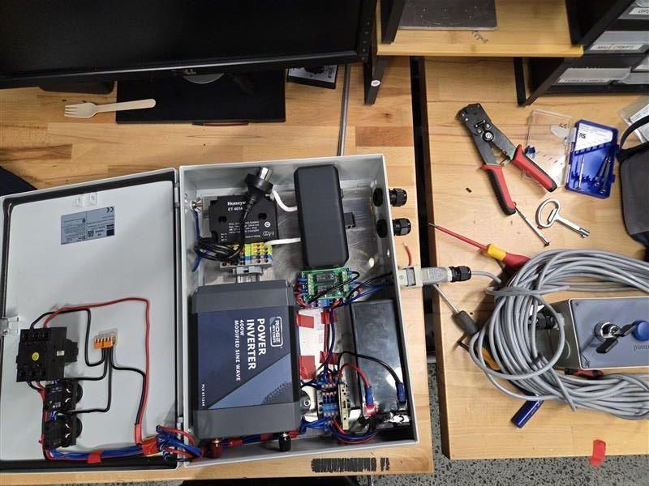

Arc-Pyro High Voltage Ignitor
Novel 14 kV ignition system designed to pyrolyze 3D printed ABS puck for hybrid rocket engine ignition
Project Overview
The Arc-Pyro is a novel ignition system designed to solve a critical challenge in hybrid rocket engines: reliably starting the combustion process. Rather than using traditional pyrotechnic igniters, this system uses a 14 kV arc to pyrolyze a 3D printed ABS puck, generating hot gas to initiate engine combustion.

The Challenge
Hybrid rocket engines require an initial ignition source to start the combustion process. Traditional pyrotechnic igniters can be unreliable and require careful handling. Our goal was to develop a reusable, electrically-controlled ignition system that could be safely operated remotely.
High Voltage Safety
Working with 14 kV requires comprehensive safety design to protect operators from electrical hazards.
Reliable Ignition
Arc must consistently pyrolyze ABS material to generate sufficient hot gas for engine ignition.
Remote Operation
System must be safely operable from remote control station during engine testing.
Technical Implementation
High Voltage Power Supply System
Designed and built a 14 kV power supply system capable of generating stable arcs for ABS pyrolysis. The system includes voltage regulation, current limiting, and remote control capabilities.
Power Electronics
14 kV high-voltage transformer with current limiting protection. Designed for repeated arc strikes without damage to components.
Arc Chamber
Custom-designed chamber to contain arc and pyrolyzed material. Optimized electrode geometry for stable arc formation and gas generation.
Remote Control
Electrically-actuated arming and firing sequences allow safe operation from remote control station, integrated with engine control systems.
Safety Engineering
Working with 14 kV required comprehensive safety design at multiple levels. I implemented multiple hardware safety interlocks to ensure operator protection during all phases of operation.
Multi-Layer Safety System
Cabinet Limit Switches
Physical interlock switches on electrical cabinet prevent system arming when enclosure is open. Operators cannot access high-voltage components while system is energized.
Isolation Switches
Manual isolation switches provide visible disconnection from power source. Lockout/tagout capability ensures safe maintenance procedures.
Remote Arming
Multi-step arming sequence requires deliberate operator actions. System cannot be accidentally energized or fired.
Fail-Safe Design
All interlocks designed to fail-safe state. Loss of power or control signal immediately disarms system.
Testing & Validation
Conducted comprehensive safety validation before any high-voltage testing. Verified all interlock functionality and established safe operating procedures for test campaign.
Testing Results
Successful Arc Formation
Bench testing demonstrated stable 14 kV arc formation with consistent characteristics. Arc successfully maintained across electrode gap under various conditions.
ABS Pyrolysis
Successfully demonstrated gas generation from ABS puck pyrolysis. High-temperature arc decomposed ABS material, producing hot gas flow suitable for engine ignition.
System Reliability
All safety interlocks performed as designed throughout testing campaign. Remote operation capability validated with successful firing sequences from control station.
14 kV Arc
Stable high-voltage arc generation demonstrated in controlled environment.
Gas Generation
Successful ABS pyrolysis producing hot gas flow for ignition.
Safe Operation
Comprehensive safety system protecting operators during all testing.
Future Potential
Showing promise for full-scale engine ignition tests.
Next Steps
The Arc-Pyro system has successfully demonstrated proof-of-concept for high-voltage ABS pyrolysis ignition. Future work includes:
Interested in my work?
Check out my other projects or get in touch.